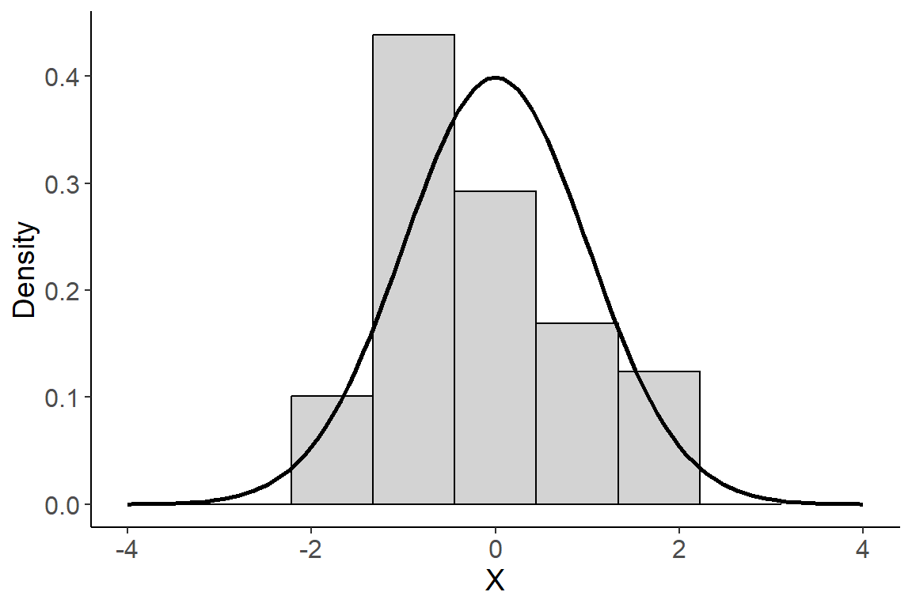
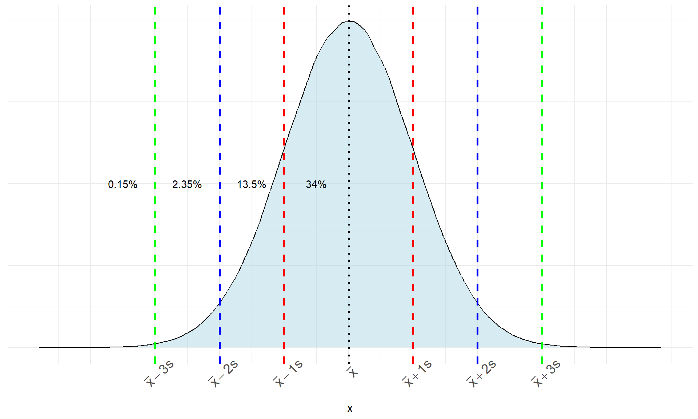
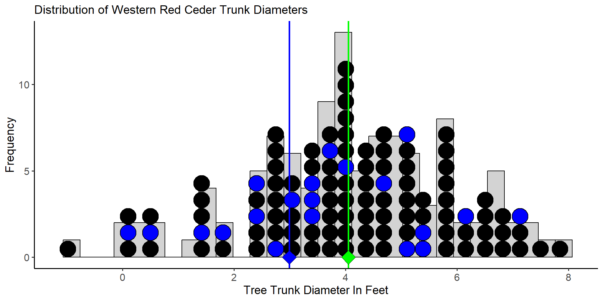

Week 5 Notes
STAT 251 Section 03
Lecture 7: Monday, Feb.5th 2024
Density Curves
We have discussed previously that a histogram is a good tool for visualizing a distribution for most variables. Nevertheless, it is crucial to recognize that the bars in a histogram depict discrete frequencies corresponding to distinct values, or in the case of continuous variables, to discrete intervals. In contrast, the true nature of a continuous variable involves a distribution function that is inherently continuous. Consequently, this distribution is more accurately represented by a smooth curve rather than discrete bars. We call such a curve a density curve and the density component can be interpreted as a continuous measure of “how often” a value occurs. We will talk more about the nature of density later when we discuss probability. For now, it is useful to know that a density curve is how we represent the distribution of a continuous variable in theory. The plot below gives a visual example of the difference between a density curve and a histogram for a continuous random variable \(X\)

The normal distribution
The density curve in the plot above is called a normal curve and represents a family of distributions called normal distributions. All normal distributions have the same general shape - a symmetric bell-shape curve. The mean is located where the peak is tallest. It also forms an axis of symmetry where both the left and right portions of the distribution are mirror images.
The normal distribution has two parameters that govern its shape:
The mean \(\mu\) determines where the center of the distribution is located on the real number line.
The standard deviation \(\sigma\) governs its shape by how spread out the values are.
We typically use the short hand notation \(x_i \sim N(\mu, \sigma)\) to denote that an observation \(x_i\) is normally distributed with population mean \(\mu\) and population standard deviation \(\sigma\).
The diagram below shows how \(\sigma\) relates to the shape of a normal distribution

- A normal distribution with small \(\sigma\) will be tall and skinny with a sharp peak. A normal distribution with a large \(\sigma\) will be short with a broad rounded peak, like a hill.

From the plot above, we can see that two distributions with the same \(\sigma\) will have the same general shape, but if they have different \(\\mu\) the location of the center will be different. Thus changing the value of the mean \(\\mu\) will shift the position of the distribution on the real number line.
The cumulative density curve for a normal distribution forms a shape like the letter S called a sigmoid curve. See the plot below

The standard deviation \(\sigma\) and the mean \(\mu\) completely determine the shape of a normal distribution. As a result, the standard deviation is a natural measure of spread for normal-shaped distributions and we can approximate its value by eye. Take for example the density curve for a normal distribution with parameters \(\mu = 0\) and \(\sigma = 1\).

One standard deviation from the mean will always be the point on the curve where the slope transitions from increasingly steep to increasingly gradual. The red dot is plotted above the point at one standard deviation from the mean and indicates the position of this slope transition.
The density curve of a normal distribution at any point \(x\) is given by the function
\[ f(x) = \frac{1}{\sigma\sqrt{2\pi}}e^{\frac{-1}{2}\left(\frac{x-\mu}{\sigma}\right)^2} \]
We will not make direct use of this function in this class however, this function represents a key point in the mathematical work in probability and statistics regarding variables that exhibit normality
Why is the normal distribution important?
Many real variables have normal distributions. For example, most physical characteristics such as height, weight, length will have this distribution.
Normal distributions are often good approximations to many kinds of chance outcomes such as counting the number of heads in many tosses of a fair coin (more on this later).
Lastly, and most importantly, many statistical inference procedures that are based on normal distributions will still give good results for other roughly symmetric distributions.
The Empirical Rule
Although there are many different normal curves, they all have common properties. One of the most important is called the empirical rule (also called the 68-95-99.7 rule). The empirical rule states that for any approximately normal-shaped distribution with mean \(\mu\) and standard deviation \(\sigma\):
approximately \(68\%\) of the observations will have a value within 1 standard deviation of the mean
approximately \(95\%\) of the observations will have a value within 2 standard deviations of the mean
approximately \(99.7\%\) of the observations will have a value within 3 standard deviations of the mean

- The plot below gives the empirical rule visualized on the cumulative density
Consider the distribution of the height of female college athletes from a survey of college students in the state of Georgia.

Approximately, what proportion of the students will have a height between 60 and 70 inches?
Approximately, what proportion of the students will have a height \(\geq 70\) inches?
Approximately, what proportion of the students will have a height between 55 and 75 inches?
Standardizing Observations: The Z-score
From the empirical rule, we know that nearly all of the observations in a bell-shaped distribution will have a value within \(\pm 3\sigma\) of the mean. Therefore, we can use the property of the empirical rule of normal distributions to come up with a criteria for defining outliers that is specific to these types of distributions.
We can define an outlier as an observation whose value is more than \(3\sigma\) greater than the mean or \(3\sigma\) less than the mean.
More commonly, outliers are defined as an observation whose value is more than \(\pm 2\sigma\) from the mean
How can we easily tell how far an observation is from the mean?
First, it is important to note that the value of \(\sigma\) or \(s\) is affected by the units of the variable. For example, in the distribution of college student heights above, height is recorded in inches and the standard deviation of college student height was about \(s = 5\). However if, we have the same dataset and height was recorded in millimeters then the standard deviation would be much larger at \(s = 127\) because the units have smaller increment. This makes comparing normal distributions, or determining outliers dependent on the scale of the underlying variable.
To get around this, we can use something called a z-score. A z-score is a standardization of an observation from a normal distribution that can be directly interpreted as the number of standard deviations the observation falls from the mean. Mathematically a z-score is defined as
\[ z_i = \frac{\text{observation} -\text{mean}}{\text{standard deviation}} = \frac{x_i - \bar{x}}{s} \]
by subtracting off the mean and dividing by the standard deviation, we are performing a linear transformation to convert \(x\) into a new unit scale. If the original distribution of \(X\) is normal \(x_i \sim N(\bar{x}, s)\), then computing the z-score represents a rescaling of \(X\) such that
\[z_i = \frac{x_i - \bar{x}}{s} \sim N(\bar{x} - \bar{x}, s/s)\]
The distribution of \(z_i\) is a special case of the normal distribution called the standard normal distribution. The standard normal distribution has a mean of zero and a standard deviation of one and we often define this in symbols as \(z_i \sim N(0,1)\)
Lets consider the following example using data collected on the air pollution of countries in the European Union:
| Country | Abbreviation | C02 Emissions Per Capita (metric tons) |
|---|---|---|
| Austria | AUT | 8.0 |
| Belgium | BEL | 10.0 |
| Bulgaria | BGR | 6.0 |
| Croatia | HRV | 4.7 |
| Cyprus | CYP | 7.0 |
| Czech Republic | CZE | 10.7 |
| Denmark | DNK | 8.3 |
| Estonia | EST | 13.7 |
| Finland | FIN | 11.5 |
| France | FRA | 5.6 |
| Germany | DEU | 9.1 |
| Greece | GRC | 7.7 |
| Hungary | HUN | 5.1 |
| Ireland | IRL | 8.8 |
| Italy | ITA | 6.7 |
| Latvia | LVA | 3.6 |
| Lithuania | LTU | 4.4 |
| Luxembourg | LUX | 21.4 |
| Malta | MLT | 6.2 |
| Netherlands | NLD | 11.0 |
| Poland | POL | 8.3 |
| Portugal | PRT | 5.0 |
| Romania | ROM | 3.9 |
| Slovak Republic | SVK | 6.7 |
| Slovenia | SVN | 7.5 |
| Spain | ESP | 5.8 |
| Sweden | SWE | 5.6 |
| United Kingdom | GBR | 7.9 |
The mean of C02 emissions is \(\bar{x} \approx 7.9\) with a standard deviation of \(s \approx 3.6\). Compute the \(z-score\) for the C02 air pollution of the country Luxembourg. Is Luxembourg an outlier? If so, what does this mean in terms of its C02 pollution?
The z-score for Luxembourg is computed as \[z = \frac{21.4 - 7.9}{3.6} = 3.75\]
This indicates that the C02 emissions for the country Luxembourg is 3.75 standard deviations above the mean C02 emissions in the EU. Using the \(\pm 2s\) rule for determining outliers, we would conclude that the emissions for Luxembourg are an outlier relative to the emissions for the rest of the European Union. Thus by computing a z-score we can quickly discover how extreme an observation is relative to its distribution.
A note about linear transformations :
- A linear or affine transformation of a variable DOES NOT change the shape of its underlying distribution. Thus, converting \(x_i\) to \(z_i\) does not “convert” the distribution of \(X\) into a normal distribution, but instead, rescales the values \(x_i\) to have zero center and unit variance. If \(x_i\) comes from a highly skewed distribution the transformed z-scores will also have a skewed distribution. See plot below:
Lecture 8: Wednesday, Feb.7th 2024
Sampling Distributions
Consider a small study to estimate the average trunk diameter (in feet) of Western Red Ceders at the idlers rest nature preserve just outside of Moscow. The population distribution is given by the histogram and dot plot below. The population consists of \(N = 109\) trees and the mean diameter is \(\mu = 4.05\) with standard deviation \(\sigma = 1.81\). The green diamond below denotes the value of the population mean diameter for trees at the Idler’s Rest nature preserve.
Assume that we want to estimate the population mean trunk diameter using a sample of \(20\) trees selected at random from the nature preserve.
The 20 red dots in the plot above represent the trees we selected to measure the diameter. From this sample of 20 trees, we estimate the mean diameter to be \(\bar{x}_1 = 4.35\) feet. Now imagine we repeat this process and gather a new sample of \(20\) trees selected randomly from the population.

The blue dots in the plot above constitute the trees selected for measurement in the second sample. This time the sample mean is computed as \(\bar{x}_2 = 2.98\) feet. Clearly, our estimate of \(\mu\) is dependent on the sample we select. Now imagine that we repeat this process many times - selecting a sample of 20 trees, measuring their diameters and computing the sample mean. It’s easy to imagine that we would produce a distribution of estimates of \(\mu\). Such a distribution is called a sampling distribution and represents the distribution of a statistic. The sampling distribution of for mean diameter from \(10,000\) samples of \(n=20\) trees is given below.

The variation in the sampling distribution of the mean shown above is because of the differences between the samples. Again, the green dot represents the population mean (\(\mu\)). From the plot, you can observe that the sampling distribution of \(\bar{x}\) is centered at the true value of the population parameter.
The margin of error of an estimate is how far we expect an estimate to fall from the true value of a population parameter. It defines a set of boundaries that allows us to quantify the how much an estimate is expected to vary between samples. Formally, it is the largest distance between the true population parameter and an estimate that is not an outlier. Thus if we use the \(\pm 2\sigma\) rule to define outliers, the margin of error of our estimate is the interval \(\hat{\theta} - 2\sigma < \theta < \hat{\theta} + 2\sigma\).
In statistics, we often hear the words significant and not significant when a particular statistical result is discussed. A Statistically significant result is one that is decidedly not due to ordinary variation - this means a result that is not due to chance or coincidence. Thus, by convention, we consider statistically significant results a result that falls outside the margin of error.
Study Design
We’ve covered basic data analysis tools, like graphs and numbers, to describe individual variables and their distribution. Descriptive statistics help us assess data suitability, identify outliers, and spot patterns for further exploration. However, an exploratory analysis of a set of data is rarely evidence enough to draw any major conclusions about patterns we may observe. This is because patterns that emerge from descriptive statistics can arise from many different sources.
Anecdotal Data
It is often tempting to draw conclusions based on our personal experiences or from second-hand accounts that are shared with us. An example of anecdotal evidence might be a person claiming that a particular herbal supplement cured their chronic headaches. Or A friend may claim that a starvation diet is healthy because they knew a few people who did it and they didn’t experience any major health effects. However, anecdotes such as these are typically based on haphazardly selected individual cases and do not provide a sound basis for drawing conclusions.
- Can you think of a time where you or someone you know made a claim based on anecdotal evidence?
Collecting Data
Statistics is an incredibly important tool as it allows us to answer questions in an objective way. The validity of our conclusions begins with a careful approach to how we collect data. Because we live in a digital world, data is typically readily available online. Most governments around the world collect data and have national statistics offices. The U.S has many government agencies that collect and host data in the public domain including the National Agriculture Statistics Service, The U.S Census Bureau, and the National Center for Education Statistics - to name a few. Moreover, many companies now passively collect data on their customers through electronic apps, social media, or through E-commerce websites.
Types of studies
Most studies are concerned with the relationship between two variables or more variables. Typically, we observe how the distribution of a response variable (sometimes called a dependent variable) changes in relationship to some explanatory variable (also called the independent variable).
Typically, the question of interest is if/how does the distribution of the response variable change in accordance to changes in the explanatory variable.
There are two primary study designs:
Observational studies - observe members of a population and measure variables of interest on those members but do not attempt to influence the responses.
- An observation study is a uncontrolled study to investigate the relationship between a response and explanatory variable
Experimental studies - deliberately impose changes on an explanatory variable (called treatments) and we observe how the response variable reacts to those changes.
- An experimental study is a controlled study to investigate the relationship between a response and explanatory variable
Lecture 9: Wednesday, Feb.9th 2024
Causation vs Association
Both observational and experimental studies seek to quantify the relationship between the response and explanatory variables. If two variables are statistically related we say they share a statistical association. If two variables are causally related, then changes in the explanatory variable cause measurable changes in the response variable. It is important to note that an association between two variables does not imply that they have a cause and effect relationship.
Experimental studies control the assignment of observations to the explanatory variable(s) through randomization . This means experimental studies control for factors that may influence a statistical relationship between two variables and provide good evidence for causal effects.
Observational studies alone cannot definitively establish a causal relationship between two variables. This is because observational studies are prone to lurking variable - an unknown variable that the researchers did not account for in the study and has an association with both the response and explanatory variables. Lurking variables can create the illusion of a statistical relationship when none exists
Example: Many studies have looked at the relationship between coffee consumption as an indicator for coronary artery disease. Studies that fail to adjust for other risk factors, like smoking, have often reported a positive association between these two variables. Thus smoking acts as a lurking variable, magnifying the relationship between drinking coffee and coronary artery disease risk
Experimental Design
A study is considered an experiment when we actually manipulate explanatory variable in order to observe how it changes the outcomes of the response variables. Lets start with some terminology:
The individuals (observations) on which the experiment is done are called experimental units
When the experimental units are human, we often refer to them as subjects
A specific experimental condition applied to the experimental units is called a treatment
Explanatory variables are called factors and the various conditions of the factors are called factor levels.
Example: What are the effects of repeated exposure to an advertising message? The answer may be influenced by both the length of the add and the number of times it is seen. Consider an experiment which used undergraduate college students as subjects. All subjects were exposed to a 40 TV-show that included adds for a fast food chain. Subjects were randomized to either a 30-second or 90-second commercial. The same commercial was shown 1, 3 or 5 times randomly during the show. After viewing the show and commercials, students were asked to self report on a Likert scale how their craving level for the advertised food.
what is the response variable?
What are the factors that are manipulated?
What are the factor levels?
Both experimental studies and observational studies use randomization to select a sample of individuals from the population of interest. But, unlike observational studies, experiments control for the effect of lurking variables through a second randomization which allocates experimental units to the different levels of the treatment. This randomization balances the effect of any lurking variables so that the effects of the explanatory variable on the response can me isolated.
- The design of an experiment is said to be biased if it systematically favors certain outcomes.
Some of the hallmarks of a good experiment include, having a control group and blinding to reduce bias:
A Control group - is a group of subjects in the experiment who do not receive the treatment. A control group is used to control bias in an experiment because, by design, the only difference between the two groups is the treatment.
Blinding is a way of designing an experiment to ensure that subjects are unaware if they are in the treatment or control group
Double blinding - when both subjects and the researchers are unaware of who is assigned to the treatment group and who is assigned to the control group.
The simplest type of experimental design is called a completely randomized design this design looks at the effects of a single treatment on a response variable.
Experimental units are randomly assigned to each level of the treatment
Each unit has an equal probability of being assigned to each treatment group
Example: Imagine a pharmaceutical company conducting a clinical trial to evaluate the effectiveness of two different formulations of a pain relief medication. In a completely randomized design:
Group 1: Participants are randomly assigned to receive Formulation A of the pain relief medication.
Group 2: Participants are randomly assigned to receive Formulation B of the pain relief medication.
The random assignment ensures that any individual differences among participants are equally distributed between the two groups. Both groups are then monitored for pain relief outcomes over the specified trial period. This design allows researchers to attribute any observed differences in pain relief between the two groups to the specific formulations of the medication, minimizing the impact of potential confounding variables.
Multifactorial experiments look at the effects of two or more treaments on a response simultaneously. There are many different types of mulitfactorial designs. Two commonly used designs are described below:
Randomized block - When subjects are not similar enough, detecting differences among the treatment groups can be difficult. We instead create groups called blocks. Blocks are organized so that units inside a block are more similar. Each block sees all treatments in random order
- Example: an agricultural study where researchers are examining the yield of three different types of fertilizers (A, B, and C) across four different fields (Blocks 1 to 4). To control for potential variability in soil conditions, a randomized complete block design is employed. In this example, each block represents a different field, and within each block, every type of fertilizer is randomly assigned to different plots. This design helps account for potential variations in soil quality between fields. The randomization ensures that any uncontrolled factors affecting a specific block are equally distributed among the different fertilizer treatments, making it easier to attribute differences in yield to the actual effect of the fertilizers.
Matched pairs - a design which takes measurements on each subject, usually once before the treatment and once after the treatment producing a set of paired measurements
- Example: consider a study investigating the impact of a new tutoring method on students’ math performance. In this matched pairs design, each subject is paired with another based on their initial math proficiency. This pairing is based on the initial math scores of the students. After the tutoring interventions, the math performance of both students in each pair is measured again. By comparing the changes in performance within each pair, researchers can better assess whether the new tutoring method had a significant impact on math proficiency while controlling for initial differences in skill levels.
Surveys
Surveys (called sample surveys in statistics) are a type of observational study where we select a subset of units from a population of such units for the purpose of making inferences about the distribution of all units (i.e., the population distribution).
In statistics, a survey is really any information gathered from a sample of subjects.
A census is a type of survey which attempts to gather information for all (or nearly all) subjects in a population
A survey consists of two main components:
A sampling frame which is a list of subjects in the population from which the sample will be collected
And a sampling design which is the method that will be used to select subjects from the sampling frame.
Any sampling design we choose should ensure that the sample we collect is representative of the entire population we are trying to estimate. Some common sampling designs include:
Convenience sampling is a type of non-random sampling that involves the sample being drawn from that part of the population that is close to hand.
Volunteer sample – a type of non-random sampling where participants self elect to be part of the study because they volunteer when asked or respond to advertisement.
- the most common type of convenience sampling
- often required when we don’t have a sampling frame for the population
- this is the type of sampling used for most medical experiments
A sample is more likely to be representative of the population if we let chance, rather than convenience, determine which subjects are sampled. For this reason, we typically choose a sampling design that uses randomization to determine which units are selected from the sampling frame.
- Simple random sampling (also just called random sampling) a type of random sampling where each subject in the sampling frame to has an equal probability of being selected for the sample.
Random sampling can be done with replacement or without replacement
When we sample with replacement, each time we sample a subject from the population we put the subject back so that it can be sampled again.
- In general, for a population of size \(N\) each subject will have a \(\frac{1}{N}\) chance of being included in the sample.
When we sample without replacement, then each time we sample a subject from the population we remove that subject from the sampling frame so that it cannot be selected again.
This means that first subject will have a \(\frac{1}{N}\) chance of being selected, the second a \(\frac{1}{N-1}\), the third a \(\frac{1}{N-2}\) \(\cdots\) and so on
Sampling without replacement is common in most surveys because the sample size is usually small in comparison to the population size (i.e \(n << N\)) and thus it is approximately the same as sampling with replacement
The following are benefits of simple random sampling:
Mathematically simple to compute estimates such as \(\bar{x}\) and \(s^2\)
Samples tend to be a good representation of the population